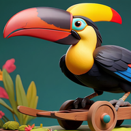

Un Juego de Costa Rica
Política de privacidad · Privacy policy · Última actualización: 23 de octubre de 2026
Español
Un Juego de Costa Rica, de Chusito Games (Orlando Jesús Calvo Vargas), funciona 100 % sin conexión.
- El juego no recoge, no vende y no envía ningún dato personal.
- No tiene cuentas de usuario, anuncios, analíticas, compras dentro del juego ni SDK de terceros que recojan datos.
- Lo único que guarda es tu progreso (destinos completados y opciones) en un archivo de tu propio dispositivo. Si desinstalás el juego, ese archivo se borra.
- Si jugás desde Steam, Steam puede respaldar ese archivo en su nube según tu configuración de Steam Cloud. Si jugás en Android, el sistema puede incluirlo en la copia de seguridad de tu cuenta de Google. Eso lo manejan Valve y Google según sus propias políticas de privacidad.
- El juego no pide permisos del dispositivo (ubicación, cámara, micrófono, contactos ni almacenamiento externo).
Si esta política cambia, se publicará aquí con su nueva fecha. Para cualquier consulta: soychusitogaming@gmail.com.
English
Un Juego de Costa Rica, by Chusito Games (Orlando Jesús Calvo Vargas), works 100% offline.
- The game does not collect, sell or send any personal data.
- It has no user accounts, ads, analytics, in-game purchases or third-party SDKs that collect data.
- The only thing it stores is your progress (completed destinations and settings) in a file on your own device. Uninstalling the game deletes that file.
- If you play on Steam, Steam may back up that file to its cloud according to your Steam Cloud settings. On Android, the system may include it in your Google account backup. Valve and Google handle that under their own privacy policies.
- The game does not request any device permissions (location, camera, microphone, contacts or external storage).
If this policy changes, the new version will be posted here with its date. For any questions: soychusitogaming@gmail.com.